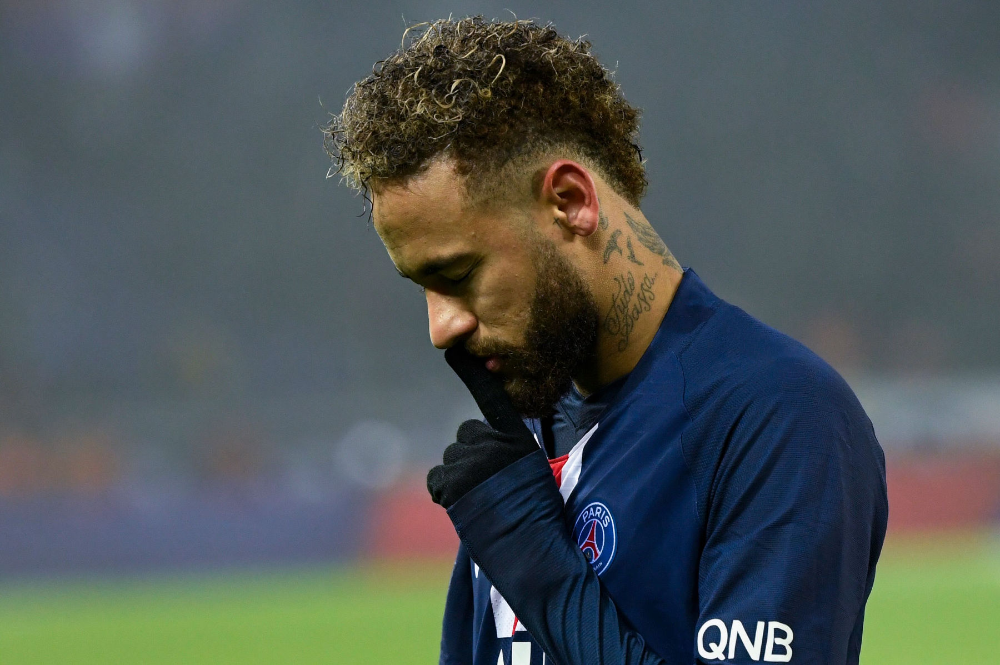

Neymar da Silva Santos Júnior (born 5 February 1992), known as Neymar Júnior or mononymously as Neymar, is a Brazilian professional footballer who plays as a forward for Saudi Pro League club Al Hilal and the Brazil national team. A prolific goalscorer and playmaker, he is widely regarded as one of the best players in the world and the best Brazilian player of his generation.[3][4][5] Neymar has scored at least 100 goals for three different clubs, making him one of the few players to achieve this feat.[6]Neymar came into prominence at Santos, where he made his professional debut aged 17. Soon becoming the Brazilian's league star player, he won the 2011 Copa Libertadores with Santos, being their first since 1963. He was named the South American Footballer of the Year in 2011 and 2012, and relocated to Europe to join Barcelona in 2013. In his second season, as part of Barcelona's attacking trio with Lionel Messi and Luis Suárez, dubbed MSN, he won the continental treble of La Liga, the Copa del Rey, and the UEFA Champions League. Motivated to be the focal player at club level, Neymar unexpectedly transferred to Paris Saint-Germain (PSG) in 2017[7] for €222 million, which made him the most expensive player ever.[note 1] In his debut season, he excelled in French football, winning the league title and being voted Ligue 1 Player of the Year.[10] Despite recurring injuries in Paris, he helped PSG attain an historic domestic quadruple in the 2019–20 season, during which the club also reached its first ever Champions League final, with Neymar being named in the UEFA Team of the Year for the second time in his career.
early life
Neymar da Silva Santos Júnior was born in Mogi das Cruzes, São Paulo, to Neymar Santos Sr. and Nadine da Silva and had a Christian upbringing.[14][15] He inherited his name from his father, who is a former footballer and became his son's advisor as Neymar's talents began to grow.[16] Neymar comments on his father's role: "My father has been by my side since I was little. He takes care of things, my finances and my family."[17] Growing up, Neymar combined his love of futsal with street football.[18] Neymar said that futsal had a massive influence on him growing up, helping him develop his technique, speed of thought and ability to perform moves in tight spaces.[19]In 2003, Neymar moved with his family to São Vicente, where he began playing for youth side Portuguesa Santista.[20] Then, later in 2003, they moved to Santos, where Neymar joined Santos.[21] With the success of his youth career and added income, the family bought their first property, a house next to Vila Belmiro, Santos' home stadium. Their quality of family life improved, as at age 15, Neymar was earning 10,000 reais per month and at 16, 125,000 reais per month. At 17, he signed his first full professional contract, was upgraded to the Santos first team, and began signing his first sponsorship deals.

club career
Neymar began playing football at an early age and he was soon spotted by Santos who offered him a contract in 2003, where he was inducted into their youth academy, which has, in the past, produced Brazilian internationals like Coutinho, Clodoaldo, Diego, Elano and Alex. He also joined the likes of Pepe, Pelé and Robinho in starting out his career at the club, nicknamed Peixe.[23] While in the youth academy, Neymar met Paulo Henrique Ganso, becoming good friends in the process. Aged 14, Neymar travelled to Spain for try outs with the Real Madrid youth team, at the time when Real had stars like Ronaldo, Zinedine Zidane, David Beckham, Roberto Carlos and Robinho. He did not stay in Madrid, however, as his father decided at the time that he preferred the young prodigy to keep growing up while playing at Santos.
eymar made his professional debut on 7 March 2009, despite being only 17 years old. He was brought on for the last thirty minutes, in a 2–1 win against Oeste.[18] The following week he scored his first goal for Santos against Mogi Mirim. One month later, on 11 April, Neymar scored the decisive goal in a 2–1 win against Palmeiras in the 2009 Campeonato Paulista semi-final first leg.[26] In the final, however, Santos suffered a 4–2 aggregate defeat to Corinthians.[27] In his first season, Neymar racked up 14 goals in 48 games.[18]
2010: Campeonato Paulista success
"The 18-year-old is a magnificent prospect. He is sleek and skilful, able to beat the defender on either side, capable of combining well, and full of tricks he can put to productive use in and around the penalty area.
South American football journalist Tim Vickery on Neymar in 2010.[28]
Neymar continued his ascendancy in 2010, and, on 15 April 2010, he scored five goals for Santos in an 8–1 rout of Guarani in the qualifying stages of the Brazilian Cup.[29] Following the 2010 Campeonato Paulista in which Neymar scored 14 goals in 19 games,[23] the club were crowned champions after a 5–5 aggregate win over Santo André in the finals.[30] Neymar was subsequently given the award for the best player in the competition.[31] Neymar's performances for Santos have drawn comparisons to other Brazilians, including Robinho and Pelé.[32]
Neymar training ahead of the 2011 Copa Libertadores final against Peñarol
In 2010, Santos rejected a £12 million bid for him from English Premier League team West Ham United,[33] and later an offer from another English club, Chelsea, reported to be in the region of £20 million.[34] Despite the unwillingness of Santos to sell and Neymar himself stating: "I'm focused only on Santos",[35] his agent, Wagner Ribeiro, indicated that Neymar's career was elsewhere, stating: "He wants to become the best player in the world. The chances of him doing that while playing in Brazil are zero."[34] One year later Neymar said, in an interview with the Daily Telegraph, that he had been happy with Chelsea's interest in him as it was a "dream" of his "to play in Europe", while also stating that at the time it had been the right decision to stay in Brazil.[36]
On 30 November 2010, Santos sold a 5% share of future transfer fees that he would receive to an investment group, Terceira Estrela Investimentos S.A. (TEISA), for R$ 3,549,900 (€1.5 million).[37] The previous year, his family had sold a 40% stake in Neymar's sporting rights to the DIS Esporte group who had been a long-term strategic partner of Santos' football club.[38]
Despite his first two seasons being highly successful, having ended the 2010 season with an impressive 42 goals in 60 games, problems had been identified, namely Neymar's apparent taste for diving when tackled, rather than attempting to continue his run, and his attitude. The latter came to the forefront during a match with Atlético Goianiense, on 15 September 2010, when the Santos' manager, Dorival Júnior, appointed another player to take the penalty awarded for a foul on Neymar. His decision was based on the fact that Neymar had missed a crucial penalty during the Copa do Brasil final of that year, even if Santos went on to win. Reacting to this, Neymar turned his back on his manager, had to be calmed down by a linesman and argued with his captain, Edu Dracena. The fallout from this event was that Dorival Júnior wished to have Neymar suspended for two weeks, but the board sided with the player and promptly sacked the manager. Despite Neymar's apologies over the incident, some doubts still remain about his attitude.[18] In December 2010, aged just 18, Neymar came third for the 2010 South American Footballer of the Year, behind Andrés D'Alessandro and Juan Sebastián Verón.[39]
puskas award
Neymar scored six goals during Santos' run to the 2011 Copa Libertadores Finals, tying him for third top goalscorer,[40] including the clinching goal of Santos' 4–3 aggregate win over Cerro Porteño in the semi-finals.[41] In the two-legged final, Santos faced Uruguayan side Peñarol and drew the first leg 0–0 in Montevideo.[42] At home in the second leg, Neymar opened the scoring in the 46th minute as Santos held on for a 2–1 win and Neymar won Man of the Match honours.[43][44] The win brought Santos their first Copa Libertadores triumph since 1963, when Brazilian legend Pelé was playing for the club.[45][46]
In September 2011, Santos club president Luís Ribeiro threatened to report Real Madrid to FIFA following reports that they had attempted to sign Neymar to a pre-contract agreement, and denied that such an agreement was in place.[47] On 9 November 2011, Neymar and Santos agreed to a contract extension that would see the player stay with the club until after the 2014 World Cup in Brazil. The deal reportedly increased Neymar's wages by 50%, to the levels that top European clubs would be paying him.[48] On 14 December 2011, Neymar scored the opening goal for Santos as they defeated Kashiwa Reysol 3–1 in the semi-finals of the FIFA Club World Cup at the Toyota Stadium in Toyota, Japan, but failed to score against Barcelona in the final on 18 December 2011, where Santos were defeated 4–0, finishing as runners-up in the competition.[49] He won the 2011 FIFA Puskás Award for scoring a solo goal in the Brasileirão Série A against Flamengo, in a 5–4 loss. On 31 December 2011, he won the 2011 South American Footballer of the Year award for the first time, by a record margin, following in the footsteps of Diego Maradona, Romário, Pelé and Zico.[50]
final season
Neymar started the 2013 Campeonato Paulista scoring twice in the first match, which ended a 3–1 win over São Bernardo on 19 January 2013.[63] Four days later on 23 January 2013, Neymar scored again against Botafogo in a 3–0 win.[64] On 3 February 2013, in the Paulista fixture against São Paulo, where Santos won 3–1, with Neymar scoring and making two assists.[65] On 18 March 2013, Neymar told that he had a "dream of playing in Europe, for a big club like Barcelona, Real Madrid and Chelsea." But he went on to say, "There's no point in speculating when I'll leave Santos. I'll leave when I want to."[66]
Neymar scored all four goals, had another disallowed and hit the post as Santos beat União Barbarense 4–0 in the Paulista on 13 April.[67] On 25 April 2013, his agent and father revealed that Neymar intended to leave for Europe before the 2014 FIFA World Cup.[68] Ahead of his last match for Santos, on 26 May against Flamengo, Neymar was in tears during the national anthem
barca
On 24 May 2013, Santos announced that they had received two offers for Neymar. The following day, Neymar announced he would sign with Barcelona on 27 May 2013 and join the team after playing in the 2013 FIFA Confederations Cup. Neither Neymar nor the clubs released details on the transfer fee or personal terms, save to say he signed a five-year deal.[70] On 3 June 2013, Neymar was unveiled by Barcelona after passing medical tests and signing a contract that would keep him at the club through June 2018.[71]
Neymar was presented at the Camp Nou in front of 56,500 fans, a record turnout for a Brazilian player.[72] Club vice-president Josep Maria Bartomeu initially said Neymar's transfer fee was €57.1 million and his release clause set at €190 million.[73][74] Barcelona's doctor suggested he might need to gain weight to be able to cope physically in Spanish football.[75]
n 24 June, his 18th birthday, Messi signed his first contract as a senior team player. It made him a Barcelona player until 2010, two years less than his previous contract, but his buyout clause increased to €150 million.[41] His breakthrough came two months later, on 24 August, during the Joan Gamper Trophy, Barcelona's pre-season competition. A starter for the first time, he gave a well-received performance against Fabio Capello's Juventus, receiving an ovation from the Camp Nou.[48] Capello sought to take Messi to Juventus on loan, but Inter Milan offered to pay his €150 million buyout clause and triple his wages.[49] According to then-president Joan Laporta, it was the only time the club faced a real risk of losing Messi, but he ultimately decided to stay.[50] On 16 September, his contract was updated for the second time in three months and extended to 2014.[41][51]
messi